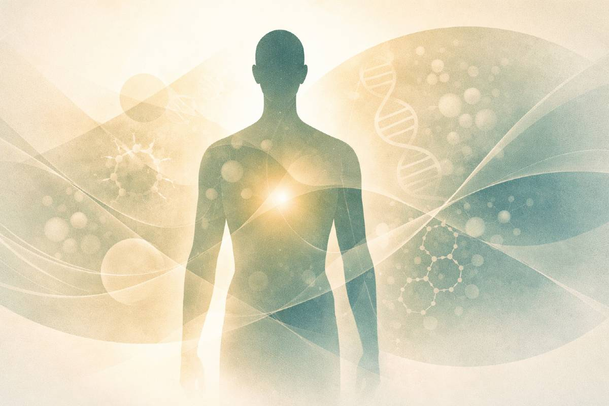

Le Covid long en 10 points essentiels
Pour comprendre ce que la science sait déjà — sans jargon ni promesses miracles
Le Covid long touche des dizaines de millions de personnes dans le monde. Pourtant, il reste encore mal compris — par les soignants, par l'entourage, et parfois par les personnes qui en souffrent elles-mêmes. Cet article ne promet pas de solution miracle. Il propose quelque chose de plus utile : des repères biologiques plausibles, cohérents avec la littérature actuelle, pour mieux comprendre ce qui se passe dans le corps — et pourquoi les approches habituelles sont parfois insuffisantes.
⚡ L'essentiel en 4 points
Maladie biologique réelle
Le Covid long est reconnu par l'OMS. Plusieurs mécanismes biologiques documentés peuvent contribuer à ses symptômes — même lorsque les examens classiques reviennent normaux.
Dérégulation, pas lésion
Le système nerveux autonome, l'immunité et la microcirculation semblent relever davantage d'une dérégulation fonctionnelle que d'une lésion destructrice visible aux examens standards.
Le seuil est central
Le malaise post-effort survient lorsqu'on dépasse les capacités du moment. Chez certaines personnes, forcer peut aggraver les symptômes. Rester sous le seuil est une stratégie de stabilisation, pas une résignation.
Espoir réaliste
Des récupérations sont documentées, souvent lentes et non linéaires. La stabilité est déjà un progrès. Comprendre les mécanismes peut constituer un premier levier d'action.
📖 Termes de référence
- Covid long / Syndrome post-Covid (PASC) = Post-Acute Sequelae of SARS-CoV-2 (EN)
- Système nerveux autonome (SNA) = Autonomic Nervous System / ANS (EN)
- Malaise post-effort (MPE) = Post-Exertional Malaise / PEM (EN)
- Dysautonomie = Dysautonomia / Autonomic dysfunction (EN)
- Gestion de l'énergie par paliers = Pacing (EN)
- Syndrome de fatigue chronique (SFC/EM) = Myalgic Encephalomyelitis/Chronic Fatigue Syndrome / ME/CFS (EN)
- Hypoperfusion microvasculaire = Microvascular hypoperfusion (EN)

Une maladie réelle et reconnue
Le Covid long est reconnu par l'OMS depuis 2021 sous le code U09.9 (condition post-Covid-19). Il ne s'agit ni d'une simulation, ni d'une plainte imaginaire. La littérature scientifique décrit plusieurs mécanismes biologiques plausibles — dysrégulation immunitaire, dysautonomie, anomalies de perfusion, perturbations énergétiques — susceptibles de contribuer aux symptômes.[1]
Des examens normaux ne nient pas la réalité des symptômes. Ils reflètent souvent les limites des biomarqueurs standards face à des dérégulations fonctionnelles qui échappent à un bilan sanguin habituel.
🔑 Le Covid long ne se résume pas à une récupération incomplète après une forme sévère. Il peut aussi survenir après une infection initiale légère, lorsque certains systèmes de régulation restent durablement perturbés.
👁️ L'œil du Docteur en pharmacie
Sur le plan réglementaire, l'OMS a formalisé la définition en octobre 2021 : symptômes persistant plus de 12 semaines après l'infection initiale, non expliqués par un diagnostic alternatif. Le code CIM-11 U09.9 permet une reconnaissance médico-administrative qui, bien qu'imparfaite, constitue un appui pour les personnes en démarche de reconnaissance de leur condition.
Une maladie systémique, pas d'un organe
Cœur, cerveau, muscles, intestin, système nerveux : le Covid long ne se limite pas à un seul organe. Il correspond à une atteinte systémique, dans laquelle plusieurs systèmes biologiques fonctionnent de façon moins coordonnée.[2]
Cette nature systémique aide à comprendre la diversité des symptômes d'une personne à l'autre — et parfois d'un jour à l'autre chez une même personne. Plusieurs systèmes étant interconnectés, le tableau clinique devient hétérogène et souvent difficile à faire entrer dans les catégories diagnostiques habituelles.
Figure 1. Le Covid long implique plusieurs systèmes biologiques interconnectés — la perturbation de l'un peut contribuer à celle des autres.
Des symptômes variables par nature
Fatigue, brouillard mental, douleurs diffuses, palpitations, troubles du sommeil, troubles digestifs : les symptômes sont multiples, fluctuants, parfois très variables d'un jour à l'autre. Cette instabilité déroute souvent l'entourage — et parfois les professionnels de santé eux-mêmes.
Pourtant, cette variabilité n'est pas une incohérence. Elle est compatible avec une dérégulation systémique : plusieurs systèmes peuvent être instables en même temps, et leur interaction fait varier les symptômes selon les jours, le stress, l'effort ou la récupération.
👁️ L'œil du Docteur en pharmacie
La comparaison avec la fibromyalgie et le syndrome de fatigue chronique (ME/CFS) est pertinente sur le plan clinique et physiopathologique. Ces conditions semblent partager certains traits : dysrégulation du système nerveux autonome, anomalies immunitaires fonctionnelles et intolérance à l'effort.[3] Cette convergence peut aider à réfléchir à des stratégies de prise en charge comparables, sans pour autant les confondre.
Pourquoi l'effort aggrave souvent
Le problème n'est pas la motivation. C'est la récupération qui devient insuffisante ou inadaptée.
Le malaise post-effort (MPE) est l'un des phénomènes les mieux documentés dans le Covid long. Il correspond à une aggravation retardée des symptômes, survenant des heures ou des jours après un effort physique, cognitif ou émotionnel qui semblait pourtant tolérable sur le moment.[1]
Ce phénomène pourrait s'expliquer, au moins en partie, par des anomalies de production et de distribution de l'énergie cellulaire (voir point 6), associées à une réponse inadaptée du système nerveux autonome aux perturbations. Dans ce contexte, forcer peut aggraver les symptômes au lieu d'améliorer l'adaptation.
⚠️ Dans le Covid long avec malaise post-effort, dépasser régulièrement ses capacités du moment peut aggraver la spirale symptomatique. La reprise d'effort utile suppose d'abord une phase de stabilisation.
Le Covid long fonctionne comme une cascade
Après l'infection initiale, certains mécanismes de défense pourraient ne pas revenir complètement à leur état antérieur. Le corps semble alors rester partiellement en mode protection. Dans ce cadre, les symptômes peuvent fonctionner par seuils : en dessous, un équilibre fragile se maintient ; au-dessus, la rechute.
Figure 2. Un modèle possible du Covid long : une alarme immunitaire qui se résout incomplètement pourrait contribuer à une dérégulation systémique avec des seuils de rechute.
Les 6 piliers biologiques du Covid long
Aucun mécanisme n'explique à lui seul le Covid long. C'est vraisemblablement leur interaction qui entretient les symptômes. La littérature actuelle fait converger plusieurs mécanismes centraux plausibles :[1][2]
- Persistance de signaux viraux — Des résidus liés à l'infection pourraient empêcher l'extinction complète de l'alerte immunitaire chez certaines personnes. Ce mécanisme pourrait agir comme déclencheur ou amplificateur, plutôt que comme cause unique.
- Dérégulation du système nerveux autonome (dysautonomie) — Le pilotage automatique de l'organisme perd une partie de sa capacité de synchronisation fine. La réponse à l'effort, au stress et aux changements de posture peut alors devenir inadaptée, avec un retentissement sur la circulation, l'énergie et la récupération.
- Dysrégulation immunitaire chronique — L'immunité ne reste pas nécessairement massivement activée, mais pourrait ne pas se résoudre correctement. Cette activité fluctuante, souvent invisible aux examens standards, peut avoir un coût énergétique important.
- Hypoperfusion microvasculaire — L'énergie peut parfois être disponible mais moins bien distribuée. La perfusion tissulaire pourrait devenir instable lors de l'effort, limitant l'apport d'oxygène à certains tissus sensibles.
- Dysfonction mitochondriale — La production d'énergie cellulaire semble perturbée chez une partie des personnes concernées, notamment au niveau du muscle squelettique. Des données récentes suggèrent un rôle possible des déséquilibres ioniques (sodium, calcium) dans les altérations mitochondriales.[5]
- Dérégulation neuro-métabolique centrale — Le cerveau, exposé à un environnement biologique instable, pourrait adopter un mode de fonctionnement plus conservateur. Cela pourrait contribuer à des symptômes cognitifs et à une fatigue centrale marquée. Une altération de la réactivité gliale (microglie, astrocytes) est proposée parmi les mécanismes possibles.[9]
À ces mécanismes peuvent s'ajouter des amplificateurs potentiels, variables selon les profils : axe intestin-cerveau (dysbiose, perméabilité intestinale), activation mastocytaire, ou réactivations virales latentes (EBV, HHV-6).
👁️ L'œil du Docteur en pharmacie
Certaines données sur la dysfonction mitochondriale dans le Covid long sont compatibles avec un mécanisme impliquant une surcharge calcique dans le muscle squelettique, possiblement en lien avec des anomalies du métabolisme énergétique anaérobie.[5] Des travaux publiés dans GeroScience explorent des approches ciblant la fonction mitochondriale (pharmacologique, nutritionnelle, exercice adapté).[6] Ces données restent préliminaires : des essais contrôlés randomisés sont nécessaires avant de conclure à une efficacité clinique.
Figure 3. Les principaux mécanismes du Covid long peuvent s'auto-entretenir. La prise en charge gagne souvent à viser plusieurs maillons de stabilisation plutôt qu'un seul.
Pourquoi il n'existe pas de traitement unique
Il n'existe probablement pas une cause unique dominante du Covid long. Il est donc peu probable qu'un médicament miracle universel suffise à lui seul. Un traitement ciblant un seul mécanisme peut aider partiellement, temporairement, ou chez certains profils — sans pour autant répondre à toute la complexité du tableau.
Cela peut expliquer pourquoi les approches mono-cibles ont jusqu'ici montré des résultats limités en population générale. La réponse la plus pertinente semble multidimensionnelle, et dépend probablement du profil biologique de chaque personne.
👁️ L'œil du Docteur en pharmacie
Aucun médicament n'a à ce jour démontré une efficacité en RCT (essai contrôlé randomisé) pour le Covid long dans son ensemble. Les essais en cours (antiviraux, immunomodulateurs, bêta-bloquants dans la dysautonomie) ciblent des sous-groupes spécifiques. La plupart des approches médicamenteuses actuellement discutées restent au niveau "mécanisme plausible" ou "association observationnelle" — ce qui est prometteur, mais insuffisant pour recommander une stratégie universelle à ce stade.
Les biomarqueurs ont des limites
Un biomarqueur est une photo, pas un film. Un résultat normal à un instant T ne dit pas comment un système se comporte sous effort, sous stress, ou en fin de journée après une forte charge.
Les examens classiques (NFS, CRP, TSH, bilan métabolique) ont été conçus pour détecter des lésions ou des dérèglements quantitatifs importants. Ils ne captent pas les dérégulations fonctionnelles subtiles qui caractérisent le Covid long : variabilité de la fréquence cardiaque altérée, réponse orthostatique inadaptée, dysfonction mitochondriale tissulaire.
Normal ≠ fonctionnement optimal. Les examens servent à orienter le diagnostic différentiel et à écarter des pathologies traitables — pas à nier l'expérience vécue.
Raisonner par leviers, pas par recettes
Dans le Covid long, il faut penser en fonctions biologiques à stabiliser :
- Régulation du système nerveux autonome
- Réduction de la charge inflammatoire chronique
- Soutien de la microcirculation
- Soutien du métabolisme énergétique mitochondrial
- Gestion de l'axe intestin-cerveau
- Gestion des seuils d'effort et de récupération (pacing)
Respecter les seuils est central. Le pacing — la gestion adaptative de l'énergie — est la stratégie la mieux documentée pour permettre à ces systèmes de se stabiliser progressivement.[7]
Figure 4. Le pacing : rester sous le seuil de rechute permet une récupération progressive. L'amélioration vient de la stabilité, pas de l'effort forcé.
Espoir réaliste : ce que disent les données
Oui, des récupérations existent et sont documentées. Elles sont souvent lentes, non linéaires, discrètes au début. Une bonne semaine ne garantit pas la suivante. Un plateau peut durer des mois avant qu'une amélioration se confirme.
La stabilité est déjà un progrès cliniquement significatif. Cesser de dégrader, c'est créer les conditions pour que les systèmes biologiques commencent à se réadapter.
Le Covid long n'est pas un corps cassé. C'est un système bloqué en mode protection. Et un système qui peut, dans certaines conditions, apprendre à se réguler différemment.
🌱 Comprendre les mécanismes n'est pas un luxe intellectuel. C'est un outil pratique : quand on comprend pourquoi l'effort aggrave, pourquoi la variabilité est normale, et pourquoi respecter ses seuils est une priorité biologique — on peut prendre des décisions plus éclairées au quotidien.
🧩 Ce que l'on sait — et ce que l'on ne sait pas encore
Le Covid long est une condition systémique reconnue par l'OMS, avec des mécanismes biologiques documentés dans des revues de haut niveau (eLife, Annals of Medicine, GeroScience). La dysautonomie, la dysrégulation immunitaire, les anomalies microvasculaires et la dysfonction mitochondriale sont des pistes convergentes, cohérentes entre elles, associées à des symptômes réels mesurables. Le pacing comme stratégie de gestion des seuils est la mieux étayée à ce jour pour limiter le malaise post-effort.
Ce qui reste spéculatif ou insuffisamment validé : les traitements pharmacologiques ciblés (aucune RCT positive pour une molécule en population générale Covid long), la hiérarchie des piliers biologiques selon les profils individuels, le rôle précis de la persistance virale dans les formes chroniques, et les prédicteurs fiables de récupération. La plupart des mécanismes décrits ici reposent sur des études observationnelles, des revues systématiques ou des données mécanistiques — pas encore sur des essais contrôlés randomisés pour la prise en charge.
Questions fréquentes
Le Covid long est-il une maladie psychologique ?
Non. Le Covid long est une maladie systémique reconnue par l'OMS (code U09.9) avec des mécanismes biologiques documentés : dysrégulation immunitaire, dysautonomie, dysfonction mitochondriale. Les examens souvent normaux reflètent les limites des biomarqueurs standards, pas l'absence de trouble biologique réel.
Pourquoi les examens reviennent-ils souvent normaux ?
Les examens classiques mesurent des lésions d'organes ou des marqueurs inflammatoires standards. Or le Covid long implique des dérégulations fonctionnelles — dysautonomie, hypoperfusion microcirculatoire, dysfonction mitochondriale — qui ne se voient pas sur un bilan sanguin habituel. Normal ne signifie pas fonctionnement optimal.
Qu'est-ce que le malaise post-effort (MPE) ?
Le malaise post-effort est une aggravation des symptômes survenant des heures ou jours après un effort physique, cognitif ou émotionnel qui semblait pourtant tolérable. C'est l'une des signatures biologiques les plus documentées du Covid long et du ME/CFS. Il est lié à des défauts de production et de distribution de l'énergie cellulaire, aggravés par un effort dépassant les capacités du moment.
Est-ce qu'on peut guérir du Covid long ?
Des récupérations sont documentées dans la littérature. Elles sont souvent lentes, non linéaires et discrètes en début de processus. La stabilité — absence d'aggravation et de rechutes — est déjà un progrès cliniquement significatif. Il n'existe pas à ce jour de traitement unique validé en RCT, mais des approches de stabilisation (pacing, régulation du système nerveux) montrent un intérêt cohérent avec les mécanismes connus.
Qu'est-ce que le pacing et pourquoi est-il recommandé ?
Le pacing (gestion adaptative de l'énergie) consiste à rester sous le seuil d'effort qui déclenche le malaise post-effort. Il ne s'agit pas d'une résignation, mais d'une stratégie biologique : en évitant les rechutes répétées, on permet aux systèmes de régulation de se réadapter progressivement. L'effort productif vient après la stabilisation, pas avant.
🧭 Suivre ses symptômes pour reprendre du contrôle
Boussole est une application gratuite qui te permet de tracer énergie, sommeil, douleurs et clarté mentale chaque jour — identifier tes seuils, détecter tes tendances, et préparer tes consultations médicales.
Essayer Boussole gratuitementSources
- Sherif ZA et al. Pathogenic mechanisms of post-acute sequelae of SARS-CoV-2 infection (PASC). eLife. 2023. Sherif et al., 2023 — PubMed 36947108
- Castanares-Zapatero D et al. Pathophysiology and mechanism of long COVID: a comprehensive review. Annals of Medicine. 2022;54(1):1473-1487. Castanares-Zapatero et al., 2022 — PubMed 35594336
- Goldenberg DL. Applying Lessons From Rheumatology to Better Understand Long COVID. Arthritis Care Res. 2023;76(1):49-56. Goldenberg, 2023 — PubMed 37525488
- Ivanovska M et al. Differential Characteristics and Comparison Between Long-COVID Syndrome and ME/CFS. Biomedicines. 2025;13(11). Ivanovska et al., 2025 — PubMed 41301889
- Scheibenbogen C, Wirth KJ. Key Pathophysiological Role of Skeletal Muscle Disturbance in Post COVID and ME/CFS. J Cachexia Sarcopenia Muscle. 2025;16(1):e13669. Scheibenbogen & Wirth, 2025 — PubMed 39727052
- Molnar T et al. Mitochondrial dysfunction in long COVID: mechanisms, consequences, and potential therapeutic approaches. GeroScience. 2024;46(5):5267-5286. Molnar et al., 2024 — PubMed 38668888
- Sanal-Hayes NEM et al. A scoping review of 'Pacing' for management of ME/CFS: lessons learned for the long COVID pandemic. J Transl Med. 2023;21(1):720. Sanal-Hayes et al., 2023 — PubMed 37838675
- Tziolos NR et al. Long COVID-19 Pathophysiology: What Do We Know So Far? Microorganisms. 2023;11(10). Tziolos et al., 2023 — PubMed 37894116
- Chaves-Filho AM et al. Chronic inflammation, neuroglial dysfunction, and plasmalogen deficiency as a new pathobiological hypothesis in post-COVID-19 and ME/CFS. Brain Res Bull. 2023;201:110702. Chaves-Filho et al., 2023 — PubMed 37423295